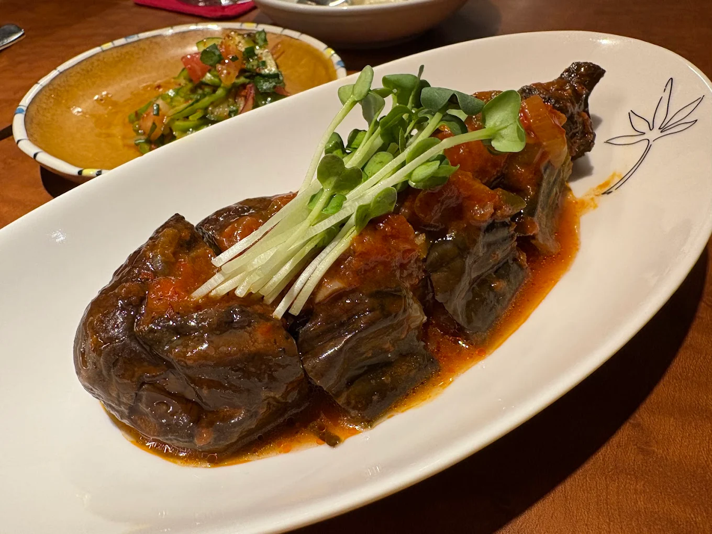
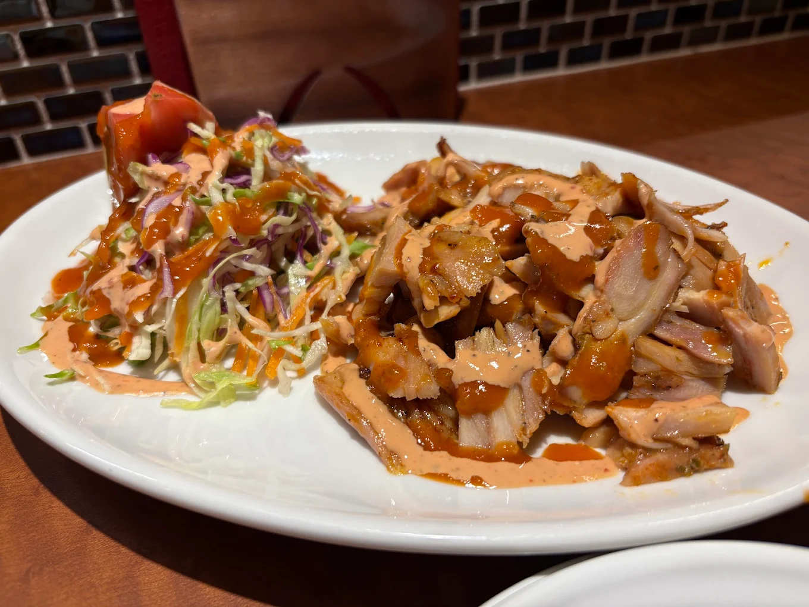
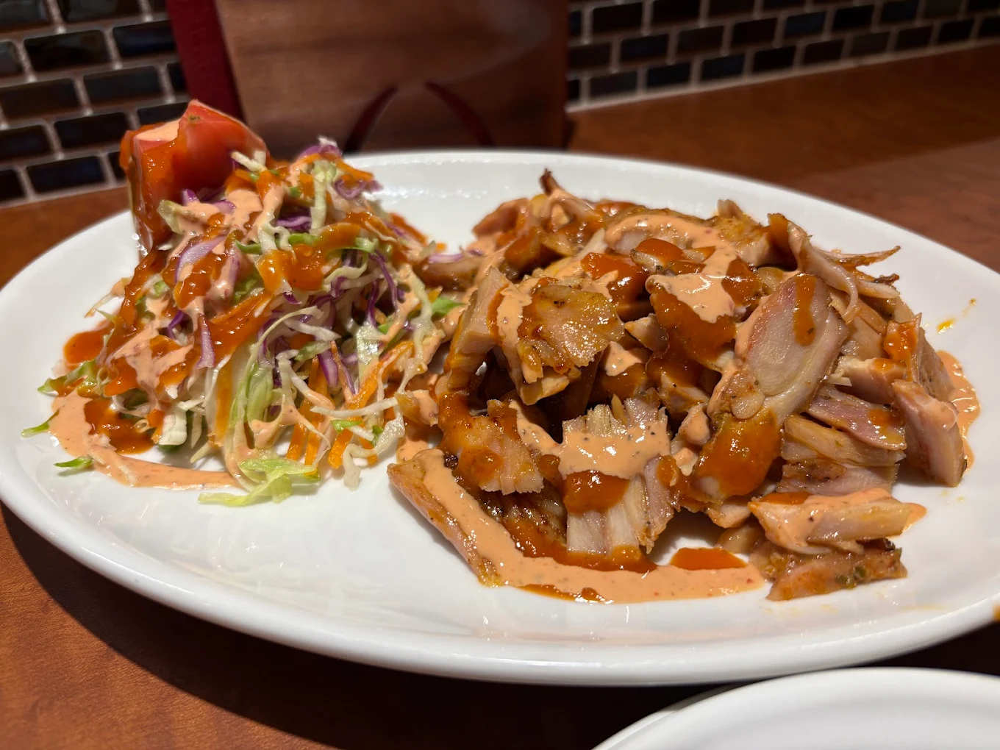
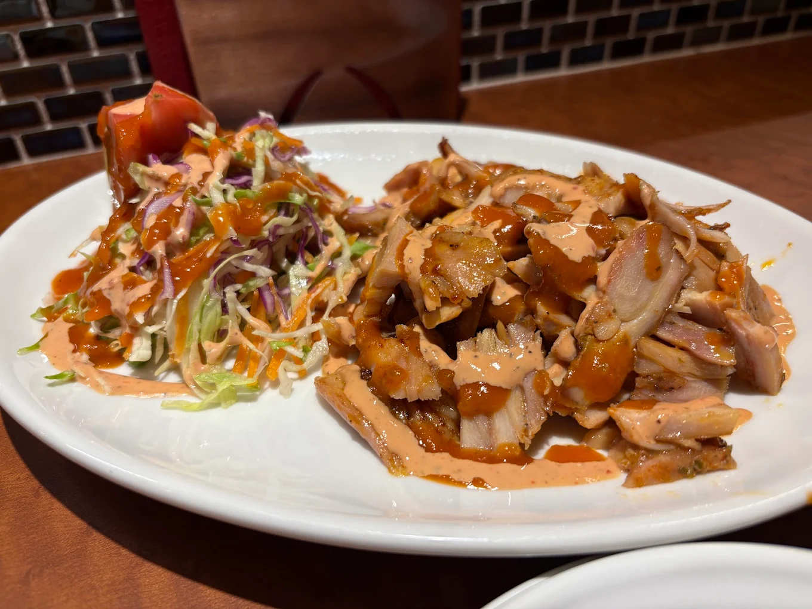

「ロカンタ アイハン」
名古屋市中区栄
※東山線・鶴舞線-伏見駅から徒歩2分

 


Googleマップの評価「星４.４」
ドネルケバブは格別、トルコ料理が食べられるお店
トルコ料理で有名なのはケバブだろう。街中でも屋台などでその姿を見ることができる。一般的にはケバブはトルティーヤなどで包むことが多いが、この店ではケバブの肉だけを盛った料理が食べられる。
店主も恐らくはトルコ人で、メニューも日本ではあまりお目にかからない料理が多い。酒も一般的な種類の他にクラフトビールも楽しめる。和食では使わないような香辛料を使うトルコ料理には、クラフトビールのような麦の香りや味わいの強い酒がよく合う。
普通の居酒屋に飽きた。普段とは違う店に挑戦したい。そういった人には是非ともおすすめの店だ。
「店舗所在地」
| 住所 | 〒460-0008 愛知県名古屋市中区栄１丁目２３−３４ |
|---|---|
| TEL | 052-223-1065 |
| URL | http://lokanta-ayhan.com/ |